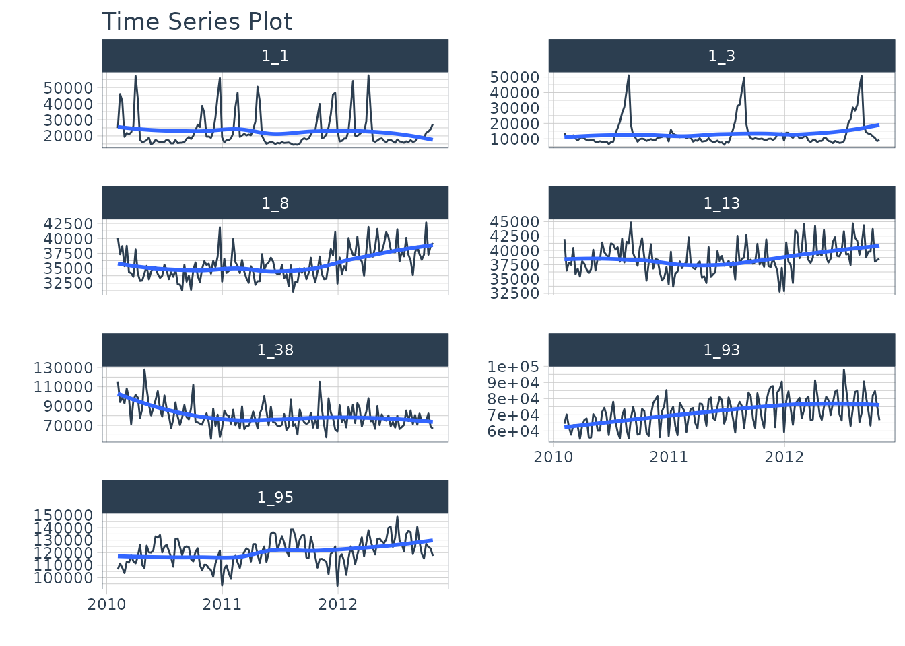

Conformal Forecast Prediction Intervals in Modeltime
Source:vignettes/modeltime-conformal-prediction.Rmd
modeltime-conformal-prediction.Rmd
Modeltime integrates Conformal Prediction Intervals as part of its time series forecasting workflow. This tutorial showcases 2 methods for Conformal Prediction Intervals:
Conformal Default Method: Uses
qnorm()to compute quantiles from out-of-sample (test set) residuals.Conformal Split Method Uses the split method split conformal inference method described by Lei et al (2018)
Time Series Conformal Forecasting Prediction Interval Tutorial
Load libraries to complete this short tutorial.
library(tidymodels)
library(modeltime)
library(timetk)
library(tidyverse)
# This toggles plots from plotly (interactive) to ggplot (static)
interactive <- FALSEStep 1 - Collect data and split into training, test, and future data sets.
We’ll start with the Walmart Sales data set from
timetk.
# Data
walmart_sales_tbl <- timetk::walmart_sales_weekly %>%
select(id, Date, Weekly_Sales) %>%
mutate(id = as_factor(id))We can visualize the data set.
walmart_sales_tbl %>%
group_by(id) %>%
plot_time_series(
Date, Weekly_Sales,
.facet_ncol = 2,
.interactive = interactive,
)
Let’s split the data into training and test sets using
time_series_split()
# Split Data 80/20
splits <- time_series_split(
walmart_sales_tbl,
assess = "1 year",
cumulative = TRUE
)
splits
#> <Analysis/Assess/Total>
#> <637/364/1001>Finally, let’s make a future dataset that will be used to forecast the next 1 year.
Step 2 - Create & Fit Forecasting Models
We’ll set up an XGBoost forecasting model for this tutorial.
Recipe
First, let’s create a recipe. This step creates a number of time series features and one-hot encodes any categorical features.
recipe_ml <- recipe(Weekly_Sales ~ ., training(splits)) %>%
step_timeseries_signature(Date) %>%
step_rm(Date) %>%
step_dummy(all_nominal_predictors(), one_hot = TRUE)
recipe_mlModel & Workflow
Next, let’s create the model and fit the recipe and model on the training dataset.
model_xgb <- boost_tree("regression") %>%
set_engine("xgboost")
wflw_fit_xgb <- workflow() %>%
add_model(model_xgb) %>%
add_recipe(recipe_ml) %>%
fit(training(splits))
wflw_fit_xgb
#> ══ Workflow [trained] ══════════════════════════════════════════════════════════
#> Preprocessor: Recipe
#> Model: boost_tree()
#>
#> ── Preprocessor ────────────────────────────────────────────────────────────────
#> 3 Recipe Steps
#>
#> • step_timeseries_signature()
#> • step_rm()
#> • step_dummy()
#>
#> ── Model ───────────────────────────────────────────────────────────────────────
#> ##### xgb.Booster
#> raw: 44.1 Kb
#> call:
#> xgboost::xgb.train(params = list(eta = 0.3, max_depth = 6, gamma = 0,
#> colsample_bytree = 1, colsample_bynode = 1, min_child_weight = 1,
#> subsample = 1), data = x$data, nrounds = 15, watchlist = x$watchlist,
#> verbose = 0, nthread = 1, objective = "reg:squarederror")
#> params (as set within xgb.train):
#> eta = "0.3", max_depth = "6", gamma = "0", colsample_bytree = "1", colsample_bynode = "1", min_child_weight = "1", subsample = "1", nthread = "1", objective = "reg:squarederror", validate_parameters = "TRUE"
#> xgb.attributes:
#> niter
#> callbacks:
#> cb.evaluation.log()
#> # of features: 3375
#> niter: 15
#> nfeatures : 3375
#> evaluation_log:
#> iter training_rmse
#> 1 45890.002
#> 2 32737.320
#> ---
#> 14 3093.845
#> 15 2945.648Step 3 - Add fitted models to a Model Table.
The next step is to add model(s) to a modeltime table. This step stores the model in a data frame for organizational purposes.
models_tbl <- modeltime_table(
wflw_fit_xgb
)
models_tbl
#> # Modeltime Table
#> # A tibble: 1 × 3
#> .model_id .model .model_desc
#> <int> <list> <chr>
#> 1 1 <workflow> XGBOOSTStep 4 - Calibrate the model to a testing set.
Next, we calibrate the model using the testing set. Note- I’m using
the id = "id" which allows us to track confidence for each
time series group in our dataset. The column “id” is used as the
grouping column.
calibration_tbl <- models_tbl %>%
modeltime_calibrate(
new_data = testing(splits),
id = "id"
)
calibration_tbl
#> # Modeltime Table
#> # A tibble: 1 × 5
#> .model_id .model .model_desc .type .calibration_data
#> <int> <list> <chr> <chr> <list>
#> 1 1 <workflow> XGBOOST Test <tibble [364 × 5]>Conformal Prediction
With the calibration table in hand, we can now implement the
conformal prediction interval. Currently, there are 2 methods
implemented in modeltime_forecast:
conformal_default: Usesqnorm()to compute quantiles from out-of-sample (test set) residuals.conformal_split: Uses the split method split conformal inference method described by Lei et al (2018)
Conformal Default Method
The default method has been implemented in modeltime from the start
of the modeltime package.
This method uses
qnorm()to produce a 95% confidence interval by default. It estimates a normal (Gaussian distribution) based on the out-of-sample errors (residuals).The confidence interval is mean-adjusted, meaning that if the mean of the residuals is non-zero, the confidence interval is adjusted to widen the interval to capture the difference in means.
Here we implement a 95% confidence interval meaning 95% of the test
data will fall within the boundaries. The tail() function
is used to show the .conf_lo and .conf_hi probabilistic prediction
intervals.
forecast_tbl <- calibration_tbl %>%
modeltime_forecast(
new_data = testing(splits),
actual_data = walmart_sales_tbl,
conf_interval = 0.95,
conf_method = "conformal_default", # Default Conformal Method
conf_by_id = TRUE, # TRUE = local CI by ID, FALSE = global CI
keep_data = TRUE
)
# Last 7 data points for (1 for each time series)
forecast_tbl %>% tail(7)
#> # A tibble: 7 × 10
#> .model_id .model_desc .key .index .value .conf_lo .conf_hi id
#> <int> <chr> <fct> <date> <dbl> <dbl> <dbl> <fct>
#> 1 1 XGBOOST prediction 2012-10-26 24996. 10825. 39167. 1_1
#> 2 1 XGBOOST prediction 2012-10-26 10884. 4842. 16927. 1_3
#> 3 1 XGBOOST prediction 2012-10-26 33634. 25973. 41296. 1_8
#> 4 1 XGBOOST prediction 2012-10-26 37287. 31689. 42884. 1_13
#> 5 1 XGBOOST prediction 2012-10-26 69167. 49454. 88880. 1_38
#> 6 1 XGBOOST prediction 2012-10-26 63422. 47315. 79529. 1_93
#> 7 1 XGBOOST prediction 2012-10-26 111583. 95210. 127956. 1_95
#> # ℹ 2 more variables: Date <date>, Weekly_Sales <dbl>We can visualize the probability intervals for the Conformal Default method.
forecast_tbl %>%
group_by(id) %>%
plot_modeltime_forecast(
.facet_ncol = 2,
.interactive = interactive,
.title = "Conformal Default"
)Conformal Split Method
When conf_method = "conformal_split, this method uses
the split conformal inference method described by Lei et al (2018). This
is also implemented in the probably R package’s
int_conformal_split() function.
forecast_tbl <- calibration_tbl %>%
modeltime_forecast(
new_data = testing(splits),
actual_data = walmart_sales_tbl,
conf_interval = 0.95,
conf_method = "conformal_split", # Split Conformal Method
conf_by_id = TRUE, # TRUE = local CI by ID, FALSE = global CI
keep_data = TRUE
)
# Last 7 data points for (1 for each time series)
forecast_tbl %>% tail(7)
#> # A tibble: 7 × 10
#> .model_id .model_desc .key .index .value .conf_lo .conf_hi id
#> <int> <chr> <fct> <date> <dbl> <dbl> <dbl> <fct>
#> 1 1 XGBOOST prediction 2012-10-26 24996. 8291. 41701. 1_1
#> 2 1 XGBOOST prediction 2012-10-26 10884. 3173. 18596. 1_3
#> 3 1 XGBOOST prediction 2012-10-26 33634. 26540. 40729. 1_8
#> 4 1 XGBOOST prediction 2012-10-26 37287. 32028. 42545. 1_13
#> 5 1 XGBOOST prediction 2012-10-26 69167. 51069. 87265. 1_38
#> 6 1 XGBOOST prediction 2012-10-26 63422. 46734. 80110. 1_93
#> 7 1 XGBOOST prediction 2012-10-26 111583. 94681. 128486. 1_95
#> # ℹ 2 more variables: Date <date>, Weekly_Sales <dbl>We can visualize the probability intervals for the Conformal Split method.
forecast_tbl %>%
group_by(id) %>%
plot_modeltime_forecast(
.facet_ncol = 2,
.interactive = interactive,
.title = "Conformal Split"
)Refit and Future Forecast
Many Conformal Prediction tutorials fail to show how to make the future forecast for data that has not happened yet. I aim to fix this. Using the following code, we can quickly refit the model and make the future forecast applying the conformal probabilities to the future forecast estimates.
refit_tbl <- calibration_tbl %>%
modeltime_refit(walmart_sales_tbl)
forecast_future_tbl <- refit_tbl %>%
modeltime_forecast(
new_data = new_data_tbl,
actual_data = walmart_sales_tbl,
conf_interval = 0.95,
conf_method = "conformal_split", # Split Conformal Method
conf_by_id = TRUE, # TRUE = local CI by ID, FALSE = global CI
keep_data = TRUE
)With the future forecast, we can visualize both the point estimates and the 95% conformal probability region.
forecast_future_tbl %>%
group_by(id) %>%
plot_modeltime_forecast(
.facet_ncol = 2,
.interactive = interactive,
.title = "Conformal Split"
)Summary
You have just seen how to do a simple Conformal Prediction estimate for a global time series model. But this is a simple problem. And, there’s a lot more to learning time series.
- Many more algorithms
- Ensembling
- Machine Learning
- Deep Learning
- Iterative Forecasting
- Scalable Modeling: 10,000+ time series
Your probably thinking how am I ever going to learn time series forecasting. Here’s the solution that will save you years of struggling.
Take the High-Performance Forecasting Course
Become the forecasting expert for your organization

High-Performance Time Series Course
Time Series is Changing
Time series is changing. Businesses now need 10,000+ time series forecasts every day. This is what I call a High-Performance Time Series Forecasting System (HPTSF) - Accurate, Robust, and Scalable Forecasting.
High-Performance Forecasting Systems will save companies by improving accuracy and scalability. Imagine what will happen to your career if you can provide your organization a “High-Performance Time Series Forecasting System” (HPTSF System).
How to Learn High-Performance Time Series Forecasting
I teach how to build a HPTFS System in my High-Performance Time Series Forecasting Course. You will learn:
-
Time Series Machine Learning (cutting-edge) with
Modeltime- 30+ Models (Prophet, ARIMA, XGBoost, Random Forest, & many more) -
Deep Learning with
GluonTS(Competition Winners) - Time Series Preprocessing, Noise Reduction, & Anomaly Detection
- Feature engineering using lagged variables & external regressors
- Hyperparameter Tuning
- Time series cross-validation
- Ensembling Multiple Machine Learning & Univariate Modeling Techniques (Competition Winner)
- Scalable Forecasting - Forecast 1000+ time series in parallel
- and more.
Become the Time Series Expert for your organization.